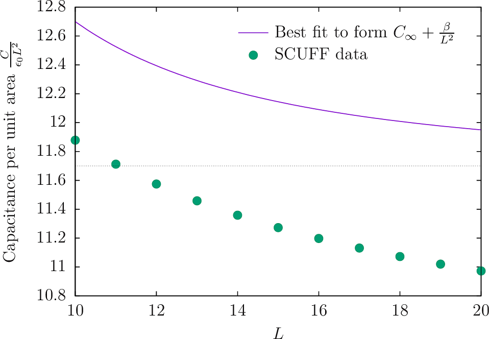

Studying finite-size effects in metal-on-substrate capacitors using data fitting in python
In this example, we use the python interface to scuff-em---specifically, to the scuff-em electrostatics module---to study finite-size effects in capacitors formed by metal traces on (infinite-area) dielectric substrates with and without ground planes.
Our calculation will exploit scuff-em's capability for implicit treatment of layered dielectric substrates, eliminating the need to mesh substrate layers or ground planes and greatly reducing computational cost.
Our goal will be to estimate the capacitance per unit length or area for infinite-size capacitors of various shapes. We will do this by using the python interface to scuff-em to fit numerical data for several finite values of the length or area to a functional form in or , then taking the limits .
Layout of input files
The input files for the calculations discussed here may be
found in the share/scuff-em/examples/pythonCapacitance subdirectory
of your scuff-em installation.
The various files here are organized into the following subdirectories:
geoFiles: gmsh geometry filesmshFiles: gmsh mesh filesscuffgeoFiles: scuff-em geometry filessubstrateFiles: scuff-em substrate-definition files
Customizable gmsh geometry for rectangular plates
The geoFiles subdirectory contains a gmsh geometry file named
Rectangle.geo which we will use to produce
surface meshes describing infinitesimally thin metallic traces of
various thicknesses. This file contains adjustable parameters
to allow the dimensions and meshing fineness to be specified on the
gmsh command line. Here are two examples:
# square of side length 10 with 4 triangles per unit area:
% gmsh -2 Rectangle.geo -o Square.msh \
-setnumber Lx 10 -setnumber Ly 10 -setnumber N 4
# center conductor for coplanar transmission line: width 1, length 10
% gmsh -2 Rectangle.geo -o Center.msh \
-setnumber Lx 1 -setnumber Ly 10 -setnumber N 4
Implicit substrate definition files
The geometries we consider will consist of one or more metal plates lying on the upper surface of an infinite-area dielectric substrate, possibly with a perfectly-conducting ground plane underneath. The substrate, which will be handled implicitly by scuff-em using the method described in this memo and demonstrated in this example, is described by a simple text file. We will consider two substrate files: one describing a freestanding finite-thickness layer of silicon (relative permittivity ):
0.0 CONST_EPS_11.7
-1.0 VACUUM
and one describing the same layer but now with a ground plane underneath:
0.0 CONST_EPS_11.7
-1.0 GROUNDPLANE
These two files are named Silicon.substrate and SiliconGP.substrate
and live in the substrateFiles subdirectory of the pythonCapacitance example folder.
Parallel-plate capacitor
Our first calculation will be for a parallel-plate capacitor consisting of a metal square of side length and area on a dielectric substrate of height and relative permittivity lying atop a perfectly-conducting ground plane. Neglecting finite-size effects, the capacitance per unit area (in units of , the permittivity of free space) should be
For the substrate described by the file SiliconGP.substrate
() we expect to find the numerical value
However, the finite size of the upper plate will cause calculated values to deviate from this prediction by an amount which (for fixed ) we expect to scale asymptotically like : where is a constant. Thus we will use scuff-em to compute the capacitance per unit area for various finite values of , fit these data to the functional form , and identify the constant in the fit as the value of the capacitance per unit area.
Here's the python code named PPCapacitance.py
that does this. For a set of
values, this script (1) invokes gmsh to produce
a surface mesh for an square, (2) calls routines
in the scuff-em python module to get the capacitance
matrix for the resulting geometry. (Since the geometry only
has one conductor, the capacitance matrix is a matrix.)
Then we use the curve_fit
routine provided by scipy to fit the data to the functional
form (2) and extract our estimate of the capacitance per
unit area in the limit.
##################################################
# python code for studying finite-size capacitors in scuff-em
# Homer Reid 20170515
##################################################
import os;
import numpy;
from scipy.optimize import curve_fit;
import subprocess;
import scuff;
###################################################
# set some environment variables so that SCUFF-EM knows where
# to look for input files
# (this assumes we are running from the share/examples/pythonCapacitance
# directory of the scuff-em installation, so that e.g.
# geoFiles and mshFiles are subdirectories of the current
# working directory; this assumption is also made by the
# gmsh shell commands below)
###################################################
os.environ["SCUFF_MESH_PATH"]="mshFiles"
os.environ["SCUFF_GEO_PATH"]="scuffgeoFiles"
os.environ["SCUFF_SUBSTRATE_PATH"]="substrateFiles"
Fineness = 3 # meshing fineness (triangle edges per unit length)
###################################################
# loop over square side lengths L
###################################################
LMin = 10
LMax = 20
LPoints = 11
LVector=[]
CPUAVector=[] # 'capacitance per unit area'
DataFile = open('PPCapacitor.CvsL','w')
DataFile.truncate();
for L in numpy.linspace(LMin, LMax, LPoints).tolist():
#
#--------------------------------------------------
# run gmsh to generate mesh file for square of side L
#--------------------------------------------------
subprocess.call(['gmsh', '-2', 'geoFiles/Rectangle.geo',
'-setnumber', 'LX', str(L),
'-setnumber', 'LY', str(L),
'-setnumber', 'N', str(Fineness),
'-o', 'mshFiles/PPCapacitor.msh'])
#
#--------------------------------------------------
# use scuff-em to compute capacitance
#--------------------------------------------------
print "Computing capacitance at L=", format(L)
Solver=scuff.SSSolver("PPCapacitor.scuffgeo", "SiliconGP.substrate");
CMatrix=Solver.GetCapacitanceMatrix()
CPUA=CMatrix[0,0] / (L*L)
LVector.append(L)
CPUAVector.append(CPUA)
DataFile.write('%-10s %-10s\n' % (format(L), format(CPUA)));
DataFile.flush()
DataFile.close()
###################################################
# fit CPUA versus L data to the form
# C(L) = CInfinity + Beta/L
###################################################
def FunctionalForm(L, CInf, Beta):
return CInf + Beta/L
CInfBeta = curve_fit(FunctionalForm, LVector, CPUAVector)[0]
CInf=CInfBeta[0]
print "\n*\n*\n"
print "Capacitance per unit area, extracted to L=infinity limit = ", format(CInf)
Results
Running the python script from the command line produces, eventually, the following output:
% python PPCapacitor.py
...
...
...
Capacitance per unit area, extracted to L=infinity limit = 11.764354485
Comparing against equation (1), we see that we recover the correct theoretical value to 3 decimal places.
Also produced is a file named PPCapacitor.CvsL, which
tabulates the finite- values of the capacitance. Here's
a plot of these data, together with the fitting function
and the extrapolation:

(Here's the gnuplot script that produces this plot).
Take-home messages:
-
The extrapolation recovers the correct infinite-area result to an accuracy of better than 1%.
-
Without this extrapolation, we would incur much more severe errors. For example, if we were to approximate the capacitance by the capacitance computed for the largest value of considered here (), we would incur an error of 9.8%, some 20× greater than the error in the infinite- extrapolation.